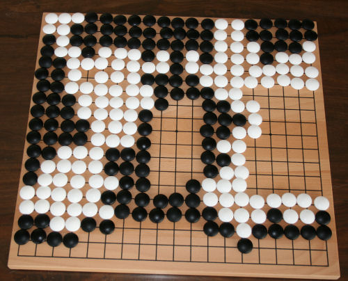
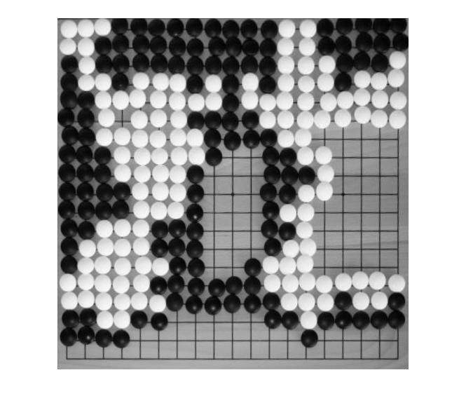
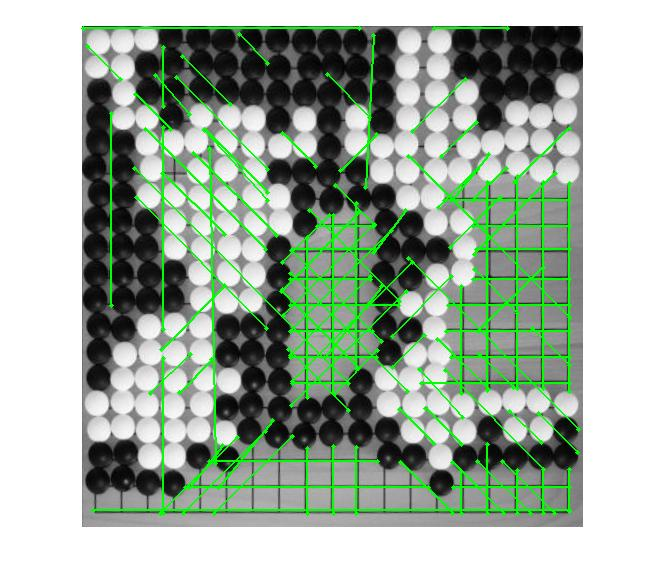

Gocam by Varun Singh
This was my capstone project for my Machine Learning class at Brown.
Abstract
Gocam provides the beginnings of a solution to a real problem: the ability to play a go game on a physical board, but record the game on a computer for playback and sharing. My Gocam program takes in an image file, and then given where the four corners of the go board are, attempts to reliably figure out the state of the board (i.e. for every grid spot, whether it is empty, black, or white). Future improvements include: Detecting the four corners automatically (I began work on this), using pixel colors to more reliably detect the white/black/no stone split, and ultimately taking in a video stream, detecting when a move is played, and then recording an entire game automatically.
Method
Original Image> 
First I convert the image into black and white. Then, I get the corners of the board from as input from the user. I then do a projective transformation to make the grid square and uniform. This entails creating a projective 'tform' object in matlab, mapping the the four corners to (0,0) (newImageSize,0) (newImageSize,newImageSize), and (0, newImageSize). I then crop the new image so that it contains only the board. This results in a new image (projectedImage), which contains only the board, and the game grid should now be square and uniform.
Then, I attempt to find the edges of the actual game grid (as opposed to the entire board). I do this by first finding the edges in the image, and then finding both hough lines and hough circles from the edges in the image. Finally, I take the extreme in the top/right/bottom/left directions of all the lines and the (midpoints of the) circles, which are beyond a 5 px margin of the sides of the image (since sometimes the edge of the board still shows up after the projective transformation), and these are the edges of the grid.
All Lines, Extreme Lines, All Circles


With the edges of the game grid, I can easily compute the positions of every 19x19 grid spot on the image. I simply divide the grid up from top to bottom and left to right into 19x19 even locations, which produces the entire game grid.

Then, I go through every single point on the game grid, and compute whether there is a black, white, or no stone there. This is the lengthiest operation by far. To do this, I established a low and high threshold for the colors of the stones. This is somewhat arbitrary, since its only based on my limited training data. Suggestions for further improvements below
At each grid location, I look in a circle of radius HALF that as measured by my circle detector. This is because we only need a small area to reliably detect the stone, and the grid positions might be slightly off, which means the full circle might go outside where the stone is. Then, I simply take the average of all the pixels within that radius at each grid location, and check if it is below a threshold (.3 for black) or above a threshold (.65 for black). If it's in the middle, that means there's no stone there.
Finally, I convert the board game into the SGF format.
Results
Gocam succesfully determined the board game state, with 100% accuracy, of 2 out of my 3 main test images. The third image was difficult because the white stones and board color were almost the same.
Further Improvements
If you prefer to not use the automatic generator, push a branch named gh-pages to your repository to create a page manually. In addition to supporting regular HTML content, GitHub Pages support Jekyll, a simple, blog aware static site generator written by our own Tom Preston-Werner. Jekyll makes it easy to create site-wide headers and footers without having to copy them across every page. It also offers intelligent blog support and other advanced templating features.
Created by @mention